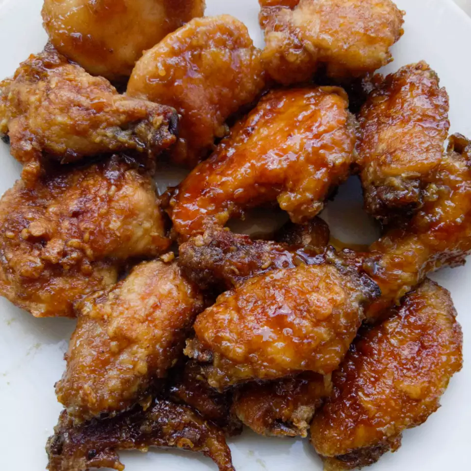

Japanese Chicken Wings

Description
Egged and fried in butter, then baked with a mixture of soy sauce, sugar, water, vinegar, garlic powder and
salt.
Recipe by Tracy
Ingredients
- 1 large egg, lightly beaten
- 1 cup all-purpose flour for coating
- ~1.4 kilograms of chicken wings
- 1 cup of butter
Sauce
- 1 cup of white sugar
- ½ cup of white vinegar
- 3 tablespoons of soy sauce
- 3 tablespoons of water
- 1 teaspoon of salt
- ½ teaspoon of garlic powder, or to taste
Steps
- Preheat the oven to 175° Celsius (350° Fahrenheit)
- Place the beaten egg in a small bowl. Place flour in a shallow bowl.
- Cut the wings in half. Dip each piece in egg, then press in flour to coat.
- Melt butter in a large, deep skillet over medium-high heat. Fry the coated wings in hot butter until deep
brown forms on both sides. Place in a shallow roasting pan.
- Make the sauce: Mix together sugar, vinegar, soy sauce, water, salt, and garlic powder in a medium bowl
until combined. Pour it over the wings.
- Bake the wings in the preheated oven for 30 to 45 minutes, basting wings frequently with sauce in the
roasting pan. An instant-read thermometer inserted into the centers of the wings near the bone should read
74° Celsius (165° Fahrenheit).